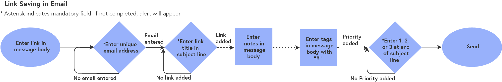
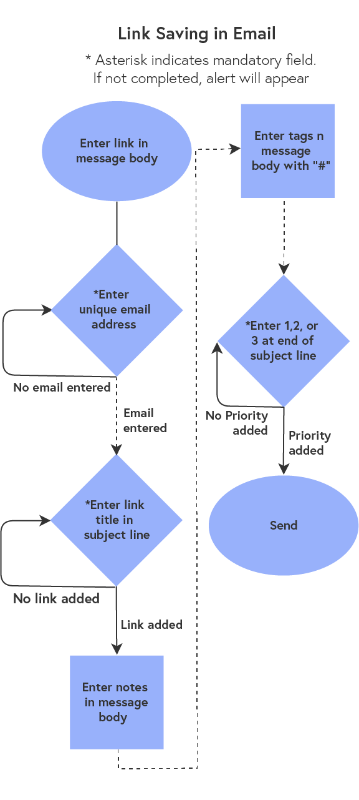

There are many tools for link saving, but no single leading platform. Why?
Core issue: All are link “graveyards”, like the pocket dashboard below . There is no indication of priority, so it's not clear what to read first.
SOLUTION
Forget Me Not makes it easy for users to save and remember what’s in their links.
Forget Me Not is a tool optimized for reading and remembering links, not just saving them
Discover
SURVEY
I began with a survey to answer some key questions:
How are people saving links?
What works?
What doesn’t?
What do they want to change about it?
The survey got:
55
responses, from
20+
U.S. Cities
To dig deeper, I looked at respondents who saved a lot of articles online. Their responses surprised me.
19%
of the Article Savers emailed links to themselves regualrly
100%
of the Article Savers who used a specialized link saving tool like pocket also emailed links to themselves
Email isn’t designed for link saving or reading, why was it so popular?
What were all these tools missing?
PERSONAS
The survey results show two primary types of users. These became personas:
Regina
24 B.S. in Communications, young marketer living in NYC
Regina is a self-improver who uses the web to find answers.
She’s always saving links that help her work better, get healthier, and stay informed.
She uses Facebook Save, plus she emails herself tons of links everyday.
She’s tried Flipboard and Pinterest, but neither of them really stuck.
Bobby
20 College Sophomore in Philadelphia
Bobby spends a couple hours on different social media sites every day.
He saves lots of articles to read later, but he never has the time to finish them.
He also uses the web to find articles for class projects and research papers.
Bobby uses Pocket, email, and Facebook Save, but he doesn’t really have a system.
COMPETITIVE ANALYSIS
The survey showed that the leading link saving methods were email, Safari Reading list, and Google bookmarks. A SWOT analysis revealed some interesting opportunities:
Strengths & Weaknesses:
Simple, easy ways to save links
Organize links through folders
No reminders to view unread links
Nothing to help you remember your link
Opportunities
Have a simple interface with just a few key features
Work across devices
Fit into users’ existing habits
Help them remember what and why they were saving
Define
USER STORIES
The survey and personas revealed that there were four core functions the platform needed to provide, these became user stories:
“As a new or returning user, I want to save a link so that I can gather helpful and interesting content from around the web”
“As a new or returning user, I want to remember to read a link so that all my collecting isn't a waste”
“As a new or returning user, I want to get rid of old links so that I don’t have an overwhelming dashboard”
“As a new or returning user, I want to remember what's in a link so that I get something out of what I save”
Before adding the more specific user stories, I researched reading retention techniques so that I could identify clear steps users could take to remember what they saved. The top techniques included visualizing what you read, articulating how the information relates to what you already know, and identifying the 3 main points. I created a retention question sequence around these techniques.
USER FLOWS
From my survey I wanted to avoid the mistakes of other link saving tools. These asked users to download yet another app and learn new ways of storing and organizing links. They didn't seem to ask why someone would want save a link, or ask how the act of saving could provide genuine value to the user. The survey made it clear that all these link saving and organization tools were missing out on helping people actually read what they saved. What if people could learn from all the links they saved? What if they had a tool that worked within the way they were already saving links?
The user flows reflected how people were already saving links, while using the science of reading retention.
User flow for saving links through email:


Design
SKETCHES & WIREFRAMES
The interface design began with some sketches.
These sketches became the first round of wireframes. Those became an interactive prototype, and were tested with 3 separate users.
Testers were confused about whether Forget Me Not was an app or website.
In thinking about how a company might create an MVP, it was clear a responsive website would be the best starting point. Building a website would be the fastest way to see if there was a demand for a tool like Forget Me Not, and it would work on all devices. The wireframes were changed to make this clear.
The testers also explained that they really needed categories for their links
and that they priority levels were unclear.
BRANDING
Several ideas came up over and over as Forget Me Not developed:
Clarity · Forget Me Not is about bringing clarity to link saving and to what you remember from the links you save.
Simplicity · Forget Me Not is a simple and practical solution that doesn’t rely on complicated features or learning how to use another app.
Intuition · Forget Me Not is about simple, intuitive actions that help you get more out of the time you spend reading online.
Brightness· Forget Me Not helps people remember what they read so they can learn better and feel brighter.
I used these to develop a visual identity for Forget Me Not, beginning with mind maps and moodboards and ending with a full brand guide that included copy tone, color palette, logos, and typefaces.
HI-FI MOCKUPS
After the branding, the first round of hi-fi mockups was finished too.
Test & Refine
USABILITY TESTING
Usability testing helped to refine some key design decisions, along with a few more user tests.
Which selected page view?
Which “read” button?
Which retention prompt?
From my testing, showed several areas needed to improve:
The multi-colored tags were confusing
The email feature needed better explanation
The priority levels still needed to be clearer
The remember button had mixed results, but no clear winner. There had to be a simple, less obtrusive way to get users to do the remember sequence
REFINEMENTS
The copy in the onboarding sequence was refined along with some other visual tweaks.
The biggest challenge was to make the “remember” feature more usable while not relying on an annoying popup, or buttons that only appeared at the end of the article.
After more brainstorming, I realized that I could add two buttons to the top menu. By making them clearly different from the navigation bar and pinning the menu to the top of the screen, users could tap “remember” or “archive” at the moment they
were finished with the link, even if they hadn’t scrolled to the bottom. This maximized the chance they would do the retention questions.
MORE TESTING
Two final user tests provided the feedback for the final version of the prototype. The label and priority colors were changed and the copy in the onboarding and saving sequences was refined.
Forget Me Not was now ready!
Deliver & Reflect
THE FINAL PRODUCT
Forget Me Not's Evolution
The Final Prototype
REFLECTION
For the future:
I would experiment with the retention sequence. Different types of reminders, like an additional question a few days after reading the link, could help users master new topics and skills.
I’d optimize the link view for photos and videos since this is big part of content saved on the web
I’d refine the onboarding and saving sequences
Lessons
You must create and test well-differentiated design solutions. In my usability testing I could have tried other ways to start the read sequence, instead of just testing two similar buttons.
Your testers must match your research results demographically and psychographically. In my first round of testing, I had one tester who said they wouldn't find the platform useful. When I asked why they explained that they
just never forgot to read links. This didn’t match my survey results or personas, so from then on I made sure to use testers who were like my future link-savers.